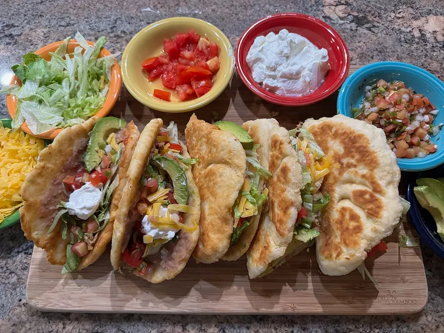

Chicken Chalupas

Description
Chalupas are small, boat-shaped flatbreads that can be filled very simply, or can be served with all the usual toppings for a taco.
Ingredients
Shells
- 3 cups all-purpose flour
- 4 teaspoons baking powder
- 1 teaspoon kosher salt
- 1 1/4 cups whole milk
- 2 tablespoons melted butter
Filling
- 2 cups chopped iceberg lettuce
- 1 cup chopped tomatoes
- 1 cup shredded Cheddar cheese, or to taste
- Optional toppings, such as pico de gallo, sour cream, or sliced avocados, to taste
- 1 cup refried beans
- 1 1/2 cups shredded cooked chicken
- 2 tablespoons taco seasoning
- oil for frying
Steps
- To make the chalupa shells, combine flour, baking powder, and salt in a medium mixing bowl. Stir well to combine the dry ingredients.
- Gradually pour in milk, while stirring, until you need to use your hand to knead. Add in the melted butter, and knead well.
- Shape dough into 6 equal balls. Sprinkle flour over a work surface and flour the rolling pin. Roll each dough ball into about a 7-inch circle, moving the dough a quarter turn after a couple of passes with the rolling pin. Add more flour to the work surface and rolling pin if dough sticks.
- Keep rolled dough circles under a clean, damp kitchen towel until ready to fry.
- Set up stations of chopped lettuce, chopped tomatoes, shredded cheese, and any optional toppings you plan to use, and place in a convenient array for assembling the chalupas.
- Microwave refried beans on medium setting until soft and spreadable, about 1 minute, and add as the first station to your other ingredients.
- Warm shredded chicken briefly in the microwave or in a skillet, and toss with taco seasoning mix, and add as the second station to the other ingredients.
- To fry chalupa shells, add cooking oil to a depth of about 1/4-inch to a large, nonstick skillet. Heat oil over medium heat, and when the oil is hot, fry one side of one dough circle until lightly brown, about 1 minute.
Using tongs, lift the partially cooked shell from the skillet and place only half of the uncooked side into the oil. Carefully hold half of the shell away from the oil, until the first half is browned, about 1 minute, then brown the other half. Repeat until all the shells are done.
- To keep the bent shape, place fried chalupa shells into a taco holder until ready to fill.
- To serve, spread each chalupa shell with about 2 tablespoons refried beans, and fill with 2 or 3 tablespoons seasoned shredded chicken. Fill with lettuce, tomatoes, and cheese.
- Garnish with optional toppings, such as pico de gallo, sour cream, and sliced avocados, if desired. Serve immediately.